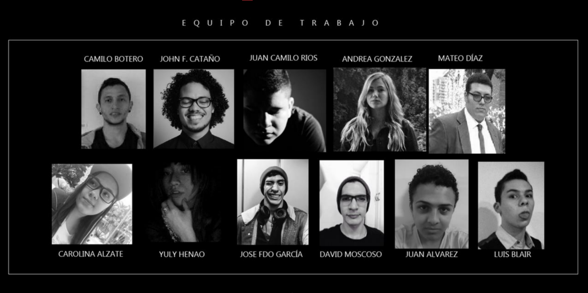

Experiencia Cyborgs.
Este trabajo fue desarrollado en Modulo de Interfaces Gráficas en un trabajo colaborativo entre Diseño Gráfico e Ingeniería en Diseño de Entretenimiento Digital. Este trabajo se mostró como un prototipo de solución para un tema recibido del Centro Costarricense de Ciencia y Cultura, especialmente para el museo de los niños. La idea era crear una Experiencia Interactiva en la cual se pudiera tomar el tema de Cyborgs, Robots y Autómatas.
PARTICIPANTES:
- Andrea González Moreno
- Yuly Andrea Henao Carmona
- Luis Eduardo Bler
- Carolina Alzate
- David Moscoso
- Juan Camilo Rios
- Jose Fernando García
- Camilo Botero
- David Mateo Diaz Perez
- Juan Esteban Álvarez
ASESORES DEL CURSO:
- Sebastian Uribe
- David Londoño
- Juan Bustamante
- Esteban Gutierrez
SOBRE EL PROYECTO.
Para pegarle un pequeño vistazo a la aplicación para android que se desarrolló como una pequeña muestra de la idea puedes descargarla dando click aquí (Nota importante aún no se ha optimizado).
Para ver el escaner que complementa el reclutamiento de las personas para la sala, puedes descargarlo dando click aquí (Nota importante necesitas Kinect 360 para poderla usar).
Animate a conocer el Brief del proyecto click aquí . A continuación imagen para que te antojes a ver el Brief completo.